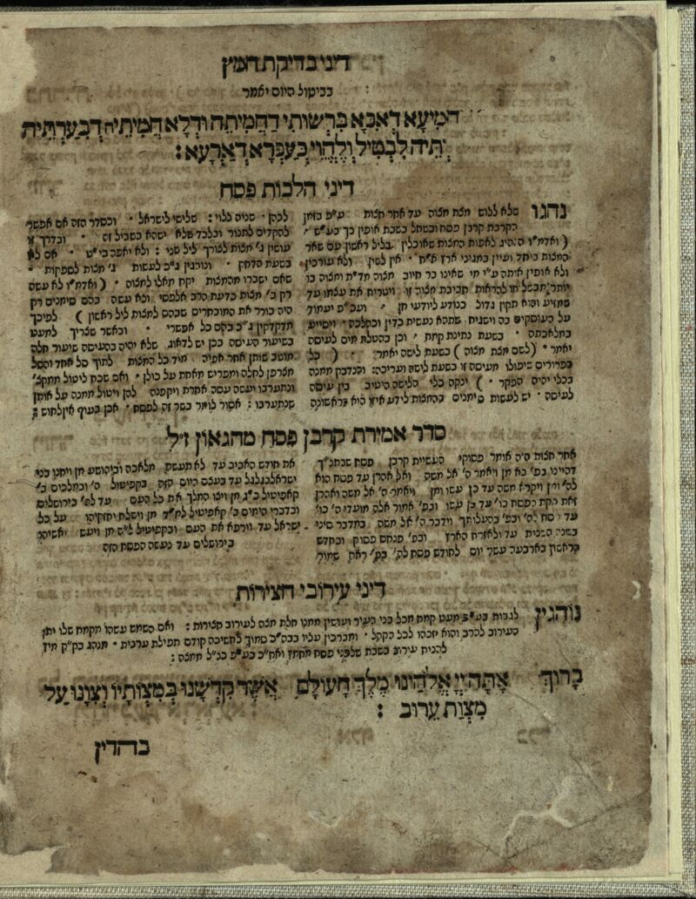
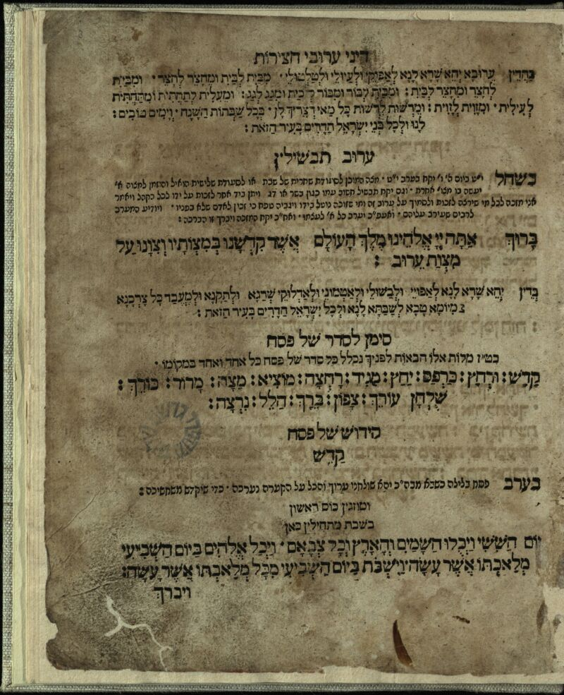

סדר הגדה של פסח / עם פירוש הגאון המקובל ... מו"ה יוסף [בן אברהם] גיקטליא ... ועם פי' אדומו"ר הגאון ... מו"ה אליהו [בן שלמה זלמן] מווילנא ... והוספת כמה דינים והנהגות טובות מאדומ"ור הגאון ז"ל ... הובא לבית הדפוס על ידי ... מרדכי צבי בראן שטיין בהרבני ... ר' שמחה בעצש מזבאריז חתן ... המנוח מוהר"ר יואל חסיד מזלאטשב. ועל ידי ה"ה מו' נפתלי הירץ בהמנוח מו' אהרן יוסף הכהן בודק מ"ס [מוכר ספרים] בחצר בהכ"נ [בית הכנסת] חדשה דת"ה [דתוך העיר].
לעמבערג : דפוס נפתלי הירץ גרויש מאן | [הסכ' תקס"ז] | book | heb

